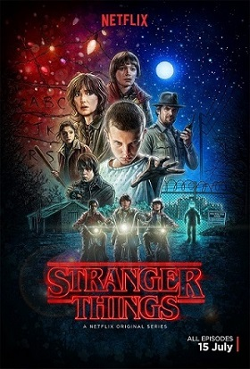
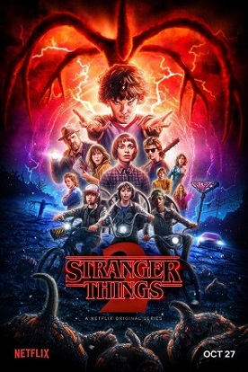
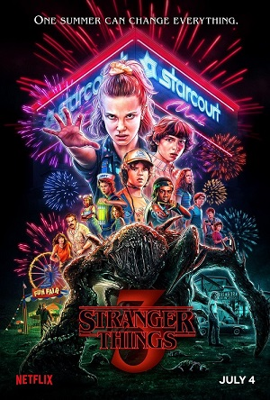
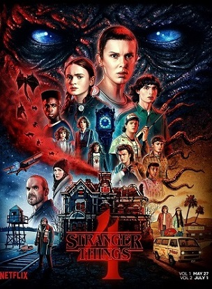
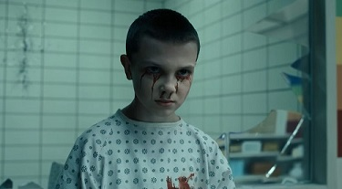
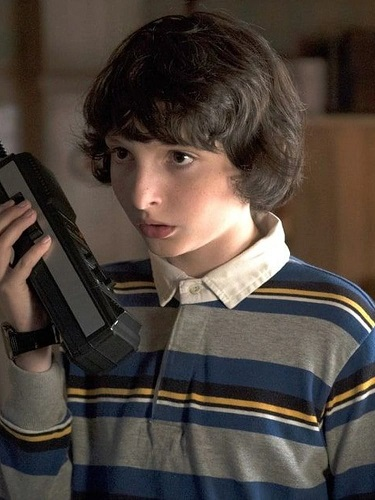

"Очень странные дела" (англ. Stranger Things) — американский научно-фантастический сериал, созданный братьями Даффер. Действие происходит в 1980-х годах в вымышленном городке Хоукинс, штат Индиана.
Сериал сочетает в себе элементы научной фантастики, ужасов и ностальгии по 1980-м годам. Первый сезон вышел на Netflix в июле 2016 года и сразу завоевал огромную популярность.
1980-е годы, тихий провинциальный американский городок. Благоприятное течение местной жизни нарушает загадочное исчезновение подростка по имени Уилл. Выяснить обстоятельства дела полны решимости родные мальчика и местный шериф, также события затрагивают лучшего друга Уилла – Майка. Он начинает собственное расследование. Майк уверен, что близок к разгадке, и теперь ему предстоит оказаться в эпицентре ожесточенной битвы потусторонних сил.
   Девочка с телекинезом и другими паранормальными способностями, сбежавшая из лаборатории Хоукинса, которую играет Милли Бобби Браун.
Одиннадцать становится близким другом Майка и других ребят, помогая им в борьбе с существами из Изнанки.
Лидер группы друзей, который первым находит Одиннадцать и помогает ей скрываться. Играет Финн Вулфхард.
Майк развивает романтические отношения с Одиннадцать, что становится одной из ключевых сюжетных линий сериала.
| Сезон | Год выхода | Количество эпизодов | Рейтинг | ||
|---|---|---|---|---|---|
| IMDb | Rotten Tomatoes | Кинопоиск | |||
| 1 | 2016 | 8 | 8.7/10 | 97% | 8.1/10 |
| 2 | 2017 | 9 | 8.6/10 | 94% | 8.0/10 |
| 3 | 2019 | 8 | 8.7/10 | 89% | 7.8/10 |
| 4 | 2022 | 9 | 9.2/10 | 92% | 8.0/10 |
Саундтрек сериала стал одним из его самых узнаваемых элементов. Главная музыкальная тема была написана Кайлом Диксоном и Майклом Стейном из группы Survive.
Популярные песни из сериала: